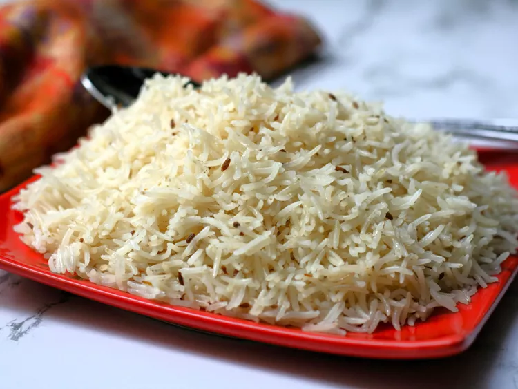

Jeera Rice

Description
Jeera rice or cumin rice is an indian rice dish made with basmati rice, few whole spices and cumin seeds. A wonderfully and subtly flavored rice that pairs perfectly with all kinds of indian curries
Ingredients
- 1 cup Basmati Rice
- 1 1/4 cup water
- 1 teaspoon Cumin seeds (Jeera)
- 1 teaspoon Salt, adjust to taste
- 1 tablespoon Ghee or Oil
- 5 Black Peppercorns
- 5 Cloves (Laung)
- 2 Bay Leaf (Tej Patta)
- 3 Green Cardamom (Elaichi)
- 1 inch Cinnamon (Dalchini)
Steps
- >Wash and drain the rice until the water runs clear.
- Heat the instant pot in sauté mode and add ghee or oil to it. Then add the whole spices and cumin seeds.
- When the cumin seeds start to splutter, add rice and stir them with the whole spices for about 30 seconds. Then add water, salt and stir again. Press cancel and close lid with vent in sealing position.
- Change the instant pot setting to manual / pressure cook mode for 4 minutes, at high pressure with vent in sealing position.
- When the instant pot beeps, do a 5 minute natural pressure release, which means manually release the pressure 5 minutes after the instant pot beeps.
- Fluff the rice with a fork and let it rest for another 5 minutes. You can take the steel insert out of the instant pot, so the bottom layer of rice does not overcook.
- Cumin Rice is ready to be enjoyed with any curry or lentil.
Back to Home Page